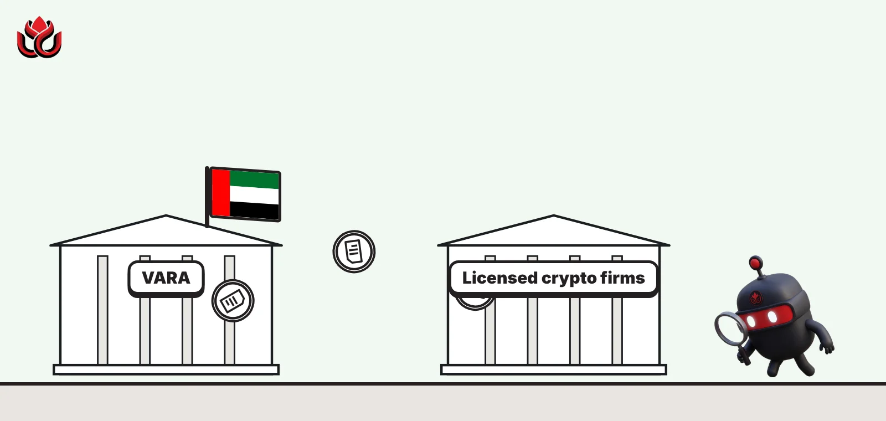
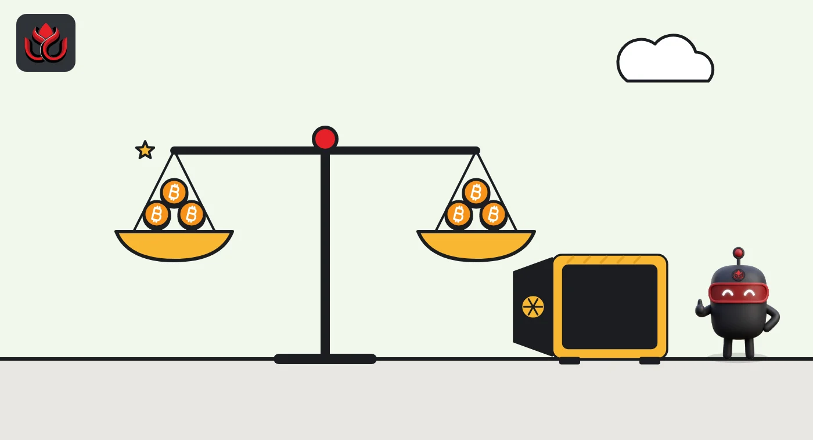

Dubai's VARA reviewed every 2025 reserve report. Now auditors face seven checks
Two VARA circulars in October tell licensed crypto firms what a real reserve audit must prove, and warn that vague website claims like "protected" and "segregated" are not enough.

Key points
- On October 6, 2026, VARA set seven minimum checks for independent audits of client crypto reserves, after reviewing all proof of reserve reports filed in 2025.
- Auditors must confirm reserves stayed at 100% of client liabilities for the whole period, held one-to-one in the same coin, across hot, warm, cold and third-party wallets.
- On October 28, VARA published good practice for public disclosures after a review that began in June 2026 found incomplete, generic and out-of-date information.
What happened
Dubai's Virtual Assets Regulatory Authority (VARA) issued a circular on reserve asset audits on October 6, 2026. It sets seven minimum checks that independent auditors must make on the client coins held by licensed virtual asset service providers (VASPs).
The circular followed a thematic review of all Proof of Reserve Assets reports these firms submitted in 2025. Proof of reserves is a check that a crypto firm actually holds the coins it owes its customers.
VARA did not publish how many reports fell short. But the circular reads as a list of gaps it wants closed. It sets out minimum expectations so that audits are consistent and detailed enough to show whether client assets exist, are held safely, are reconciled and are protected.
Three weeks later, on October 28, VARA followed with a second circular on how licensed firms disclose information to the public. Both are listed on VARA's news page.
The seven checks an auditor must make
The circular starts from rules already on the books. Under VARA's Compliance and Risk Management Rulebook, client coins must sit in wallets separate from the firm's own coins. They must not be lent out or reused unless the client consents and licensing rules are met. Firms must also reconcile each client's holdings daily.
Under VARA's Company Rulebook, a licensed firm must hold reserve assets equal to 100% of what it owes clients, in the same coin, reconciled daily and audited by an independent third party. The circular says the audit must, at a minimum:
- confirm reserves never fell below 100% of client liabilities during the review period, not just on one day;
- confirm reserves were held one-to-one in the same coin, with no swapping in another asset of equal value;
- cover every wallet holding client assets: hot, warm and cold wallets, wallet infrastructure providers and third-party custodians;
- check that client assets were kept apart from the firm's own coins and flag any mixing;
- confirm the firm controlled every client wallet and describe how each is held;
- confirm daily reconciliation against client liabilities, with evidence;
- state whether any client assets were lent, pledged or reused (rehypothecated), and give details.

No more taking management's word
VARA also told auditors how to write the report. For each of the seven items, it expects the procedures performed, the evidence obtained, the sampling method across the period, any reliance on third parties and any limits on scope. Reports must separate clean results, exceptions, scope limits and items that could not be verified.
One line stands out. Where independent evidence is reasonably available, VARA wrote, "management representations alone should not be relied upon as sufficient audit evidence."
Hiring an auditor does not shift responsibility, the regulator added. The firm's board, senior executive officer and control functions remain on the hook for keeping client assets safe, the circular said.
Websites that say too little
The October 28 circular came out of a thematic review VARA started in June 2026 on a representative sample of licensed firms. It found disclosures that were incomplete, too vague, hard to find, out of line with how the firm really operates, or not updated after business changes.
VARA said some firms seemed to treat disclosure "primarily as a licensing deliverable, rather than as a continuing regulatory obligation." Specific problems included:
- Pricing: broker-dealers saying prices come from "market conditions" or "liquidity providers" without explaining the method or the spread added.
- Order routing: no clear statement on whether any single liquidity source gets 20% or more of client orders, which the rules require firms to disclose.
- Token data: missing details such as market cap, circulating supply or smart contract audits for each asset, or simply a link to CoinMarketCap instead.
- Client asset protection: broad claims that funds are "protected" or "segregated" with no explanation of how.
The circular also describes what good looks like. One example is a central register that maps every disclosure rule to a web page, names an owner and a compliance reviewer, and records when each page was last tested. Firms should also say clearly whether any of their accounts, funds or coins are held by a third party, and name that party.
VARA stressed that the circular illustrates good practice and does not change any rule.
Timeline
Licensed VASPs submit Proof of Reserve Assets reports to VARA
VARA starts thematic review of public disclosures
Circular on Reserve Assets Audit Reports
Circular on good practice for public disclosures
LC Insight analysis
This section is our reading of the facts above, not a statement of fact.
- The key change is that reserves must stay at 100% for the whole review period. A one-day snapshot is something a firm can prepare for. Continuous coverage is much harder to fake.
- Naming warm wallets, wallet tech providers and third-party custodians closes the obvious gaps where coins can sit outside an auditor's view. Expect higher audit costs for smaller Dubai licensees.
- The timing matters. Both circulars landed in a month of large exchange hacks, and whether client coins are really there is the question users now ask first. VARA's seven checks give them a list to hold any exchange's reserve report against.
What's next
- Whether VARA publishes aggregate findings or names firms
- 2026 reserve audit reports filed under the new expectations
- Updated pricing and order routing disclosures on licensed firms' websites
Disclaimer. This article is based on public information and the sources listed below as of the update time shown. It is for information only and is not investment, legal or tax advice. Figures may change as companies and authorities publish new data.